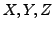
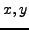

#include <gandalf/vision/camera.h>
and the single precision version in
#include <gandalf/vision/cameraf.h>
The Gandalf camera defines the transformation from camera 3D coordinates
into image coordinates and back again. Ten camera models are defined,
all using the assumption that the projected position in the image is
independent of the depth.
The camera structure (double precision floating point version) is as follows:
/**
* \brief Structure containing camera parameters.
*/
typedef struct Gan_Camera
{
/// Type of camera
Gan_CameraType type;
/// parameters of linear camera
/// focal distance in x/y pixels
double fx, fy;
/// image centre x/y coordinates
double x0, y0;
/// third homogeneous image coordinate
double zh;
/**
* \brief Supplementary parameters for non-linear camera models.
*
* The thresholds are the square \f$ R^2 \f$ of the undistorted radial
* camera coordinate \f$ R \f$ where the first reversal of distortion occurs
* (\a thres_R2), and the similar threshold on the distorted radial
* distance \f$ d\:R \f$, involving both the distortion coefficient
* \f$ d \f$ and \f$ F \f$ (thres_dR), at the same reversal point.
* Both thresholds are set to \c DBL_MAX if there is no reversal.
*/
union
{
struct
{
/// Distortion coefficients
double K1;
/// Thresholds on \f$ R^2 \f$ and \f$ d\:R \f$
double thres_R2, thres_dR;
/// Outer linear model parameters
double outer_a, outer_b;
} radial1;
struct
{
/// Distortion coefficients
double K1, K2;
/// Thresholds on \f$ R^2 \f$ and \f$ d\:R \f$
double thres_R2, thres_dR;
/// Outer linear model parameters
double outer_a, outer_b;
} radial2;
struct
{
/// Distortion coefficients
double K1, K2, K3;
/// Thresholds on \f$ R^2 \f$ and \f$ d\:R \f$
double thres_R2, thres_dR;
/// Outer linear model parameters
double outer_a, outer_b;
} radial3;
struct { double cxx, cxy, cyx, cyy; } xydist4;
} nonlinear;
/// gamma value of images taken using this camera
double gamma;
/// point functions
struct
{
/// point projection function
Gan_Bool (*project) ( struct Gan_Camera *camera,
Gan_Vector3 *X, Gan_Vector3 *p,
Gan_Matrix22 *HX, struct Gan_Camera HC[2],
int *error_code );
/// point back-projection function
Gan_Bool (*backproject) ( struct Gan_Camera *camera,
Gan_Vector3 *p, Gan_Vector3 *X,
int *error_code );
/// function to add distortion to a point
Gan_Bool (*add_distortion) ( struct Gan_Camera *camera,
Gan_Vector3 *pu, Gan_Vector3 *p,
int *error_code );
/// function to remove distortion from a point
Gan_Bool (*remove_distortion) ( struct Gan_Camera *camera,
Gan_Vector3 *p, Gan_Vector3 *pu,
int *error_code);
} point;
/// line functions
struct
{
/// line projection function
Gan_Bool (*project) ( struct Gan_Camera *camera,
Gan_Vector3 *L, Gan_Vector3 *l );
/// line back-projection function
Gan_Bool (*backproject) ( struct Gan_Camera *camera,
Gan_Vector3 *l, Gan_Vector3 *L );
} line;
} Gan_Camera;
The single precision version Gan_Camera_f is defined similarly.
The camera models are defined in <gandalf/vision/camera_defs.h>,
and are
/**
* \brief Camera models supported by Gandalf.
*/
typedef enum
{
/// linear camera model
GAN_LINEAR_CAMERA,
/// one parameter K1 of radial distortion
GAN_RADIAL_DISTORTION_1,
/// two parameters K1,K2 of radial distortion
GAN_RADIAL_DISTORTION_2,
/// three parameters K1,K2,K3 of radial distortion */
GAN_RADIAL_DISTORTION_3,
/// one parameter K1 of inverse radial distortion
GAN_RADIAL_DISTORTION_1_INV,
/// stereographic projection
GAN_STEREOGRAPHIC_CAMERA,
/// equidistant projection
GAN_EQUIDISTANT_CAMERA,
/// sine-law projection
GAN_SINE_LAW_CAMERA,
/// equi-solid angle projection
GAN_EQUI_SOLID_ANGLE_CAMERA,
/// distortion model as used by 3D Equalizer V4
GAN_XY_DISTORTION_4,
} Gan_CameraType;
The linear and radial distortion models are standard models.
The stereographic, equidistant, sine law and equi-solid angle models are
wide-angle camera models from [5].
The coordinate frames are illustrated in Figure 5.1.
The linear camera model is the simplest standard camera model. It defines
the following model relating camera 3D coordinates  to image
coordinates :
The linear model is an ``ideal'' model, corresponding to a perfect pinhole
camera. It is safe to use this model when the focal length of the lens is
large. In practice there will be non-linear distortions, and the
simplest model of distortion is that it is purely radial,
i.e. directed directly towards or away from the centre of the
image5.1
A simple model of this distortion is